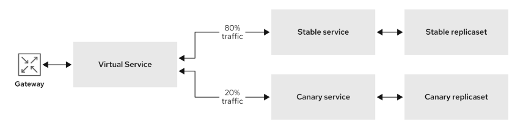

Argo Rollouts & Istio Service Mesh¶
Il supporto di Istio all'interno di Argo Rollouts utilizza le risorse Gateway e VirtualService per gesire il routing del traffico.
-
Gateway: puoi utilizzare un Gateway per gestire il traffico in entrata e in uscita per la tua mesh. Il gateway è il punto di ingresso della Service Mesh e gestisce le richieste di traffico inviate a un'applicazione.
-
VirtualService: definisce le regole di routing del traffico e la percentuale di traffico che va ai servizi sottostanti, come i servizi stable e canary
Quando si utilizza la Service Mesh, Argo Rollouts modifica automaticamente la risorsa VirtualService per controllare la percentuale di traffico suddiviso tra le versioni stable e canary. Nel diagramma seguente, il 20 % del traffico viene inviato alla versione canary dell'applicazione dopo la prima promotion e quindi l'80% viene inviato alla versione stabile del servizio.

1. Requisiti¶
- Red Hat Openshift GitOps
- Argo Rollouts
- Argo Rollouts CLI
- Openshift Service Mesh
2. Definizione ServiceMeshControlPlane¶
apiVersion: maistra.io/v2
kind: ServiceMeshControlPlane
metadata:
name: basic
namespace: istio-system
spec:
addons:
grafana:
enabled: true
jaeger:
install:
storage:
type: Memory
kiali:
enabled: true
prometheus:
enabled: true
gateways:
openshiftRoute:
enabled: true
mode: MultiTenant
policy:
type: Istiod
profiles:
- default
telemetry:
type: Istiod
tracing:
sampling: 10000
type: Jaeger
version: v2.6
3. Definizione ServiceMeshMemberRole¶
apiVersion: maistra.io/v1
kind: ServiceMeshMemberRoll
metadata:
name: default
namespace: istio-system
spec:
members:
- istio-rollouts
3.1 Injection automatica dei sidecar¶
E' possibile sfruttare l'injection automatica dei sidecar configurando una label direttamente sul namespace eseguendo il comando:
oc label namespace istio-rollouts istio-injection=enabled
4. Crezione risorse¶
4.1 Gateway¶
apiVersion: networking.istio.io/v1alpha3
kind: Gateway
metadata:
name: rollouts-demo-gateway
spec:
selector:
istio: ingressgateway
servers:
- port:
number: 80
name: http
protocol: HTTP
hosts:
- "*"
4.2 Servizi¶
apiVersion: v1
kind: Service
metadata:
name: rollouts-demo-stable
spec:
ports:
- port: 80
targetPort: http
protocol: TCP
name: http
selector:
app: rollouts-demo
apiVersion: v1
kind: Service
metadata:
name: rollouts-demo-canary
spec:
ports:
- port: 80
targetPort: http
protocol: TCP
name: http
selector:
app: rollouts-demo
4.3 VirtualService¶
apiVersion: networking.istio.io/v1alpha3
kind: VirtualService
metadata:
name: rollouts-demo-vsvc
spec:
gateways:
- rollouts-demo-gateway
hosts:
- rollouts-demo-vsvc.local
http:
- name: primary
route:
- destination:
host: rollouts-demo-stable
port:
number: 15372
weight: 100
- destination:
host: rollouts-demo-canary
port:
number: 15372
weight: 0
tls:
- match:
- port: 3000
sniHosts:
- rollouts-demo-vsvc.local
route:
- destination:
host: rollouts-demo-stable
weight: 100
- destination:
host: rollouts-demo-canary
weight: 0
4.4 Rollout¶
apiVersion: argoproj.io/v1alpha1
kind: Rollout
metadata:
name: rollouts-demo
spec:
replicas: 5
strategy:
canary:
canaryService: rollouts-demo-canary
stableService: rollouts-demo-stable
trafficRouting:
istio:
virtualServices:
- name: rollouts-demo-vsvc
routes:
- primary
steps:
- setWeight: 20
- pause: {}
- setWeight: 40
- pause: {}
- setWeight: 60
- pause: {duration: 30}
- setWeight: 80
- pause: {duration: 60}
revisionHistoryLimit: 2
selector:
matchLabels:
app: rollouts-demo
template:
metadata:
labels:
app: rollouts-demo
istio-injection: enabled
spec:
containers:
- name: rollouts-demo
image: argoproj/rollouts-demo:blue
ports:
- name: http
containerPort: 8080
protocol: TCP
resources:
requests:
memory: 32Mi
cpu: 5m
Verificare che la service mesh indirizzi il 100% del traffico verso la versione stabile dell'applicazione.
oc argo rollouts get rollout rollouts-demo --watch -n istio-rollouts
5. Simulare nuova versione canary¶
Simula la nuova versione canary dell'applicazione modificando l'immagine del container distribuita durante il rollout
oc argo rollouts set image rollouts-demo rollouts-demo=argoproj/rollouts-demo:yellow -n istio-rollouts
Di conseguenza, l'immagine del container distribuita durante il rollout viene modificata e il rollout avvia una nuova distribuzione canary
6. Promote¶
oc argo rollouts promote rollouts-demo -n istio-rollouts
Il 60% del traffico viene indirizzato al servizio stable e il 40% al servizio canary. Il deployment viene quindi messo in pausa a tempo indeterminato finché non lo si promuove manualmente al livello successivo.
6.1 Step finale (100%)¶
Aumentare il peso del traffico nella versione canary al 100% ed eliminare il traffico nella precedente versione stabile dell'applicazione eseguendo il seguente comando:
oc argo rollouts promote rollouts-demo -n istio-rollouts
Dopo il completamento con successo, il peso sul servizio stable è del 100% e 0% sul servizio canary.